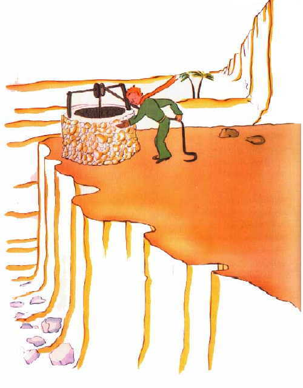
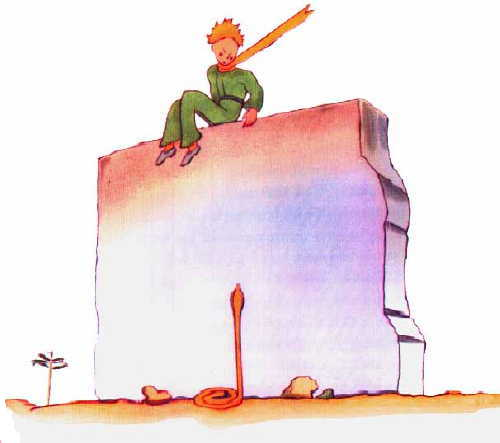
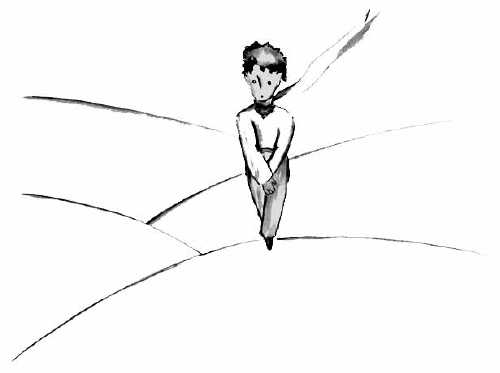
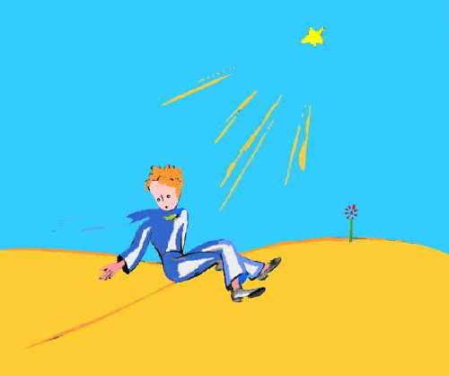
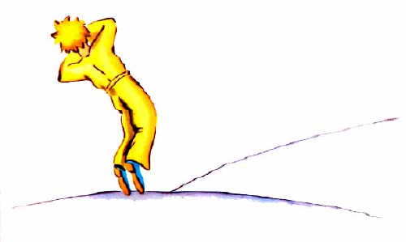

“你好。”小王子说。
“你好。”商人说道。
这是一位贩卖能够止渴的精制药丸的商人。每周吞
服一丸就不会感觉口渴。
“你为什么卖这玩艺儿？”小王子说。
“这就大大地节约了时间。”商人说，“专家们计
算过，这样，每周可以节约五十三分钟。”
“那么，用这五十三分钟做什么用？”
“随便怎么用都行。…”
小王子自言自语地说：“我如果有五十三分钟可支
配，我就悠哉游哉地向水泉走去…”
XXIV
这是我在沙漠上出了事故的第八天。我听着有关这
个商人的故事，喝完了我所备用的最后一滴水。
“啊！”我对小王子说，“你回忆的这些故事真
美。可是，我还没有修好我的飞机。我没有喝的了，
假如我能悠哉游哉地走到水泉边去，我一定也会很高兴
的！”
小王子对我说：“我的朋友狐狸…”
“我的小家伙，现在还说什么狐狸！”
“为什么？”
“因为这就要渴死人了。”
他不理解我的思路，他回答我道：
“即使快要死了，有过一个朋友也好么！我就为我
有过一个狐狸朋友而感到很高兴…”
“他不顾危险。”我自己思量着，“他从来不知道
饥渴。只要有点阳光，他就满足了…”
他看着我，答复着我的思想：
“我也渴了…我们去找一口井吧…”
我显出厌烦的样子：在茫茫的大沙漠上盲目地去找
水井，真荒唐。然而我们还是开始去寻找了。
当我们默默地走了好几个小时以后，天黑了下来，
星星开始发出光亮。由于渴我有点发烧，我看着这些星
星，象是在做梦一样。小王子的话在我的脑海中跳来跳
去。
“你也渴吗？”我问他。
他却不回答我的问题，只是对我说：
“水对心也是有益处的…”
我不懂他的话是什么意思，可我也不做声…我知道
不应该去问他。
他累了，他坐下来。我在他身旁坐下。沉默了一
会，他又说道：
“星星是很美的，因为有一朵人们看不到的花…”
我回答道：“当然。”而我默默地看着月光下沙漠
的褶皱。
“沙漠是美的。”他又说道。
确实如此。我一直很喜欢沙漠。坐在一个沙丘上，
什么也看不见、听不见。但是，却有一种说不出的东西
在默默地放着光芒…
“使沙漠更加美丽的，就是在某个角落里，藏着一
口井…”
我很惊讶，突然明白了为什么沙漠放着光芒。当我
还是一个小孩子的时候，我住在一座古老的房子里，
而且传说，这个房子里埋藏着一个宝贝。当然，从来没
有任何人能发现这个宝贝，可能，甚至也没有人去寻找
过。但是，这个宝贝使整个房子着了魔似的。我家的房
子在它的心灵深处隐藏着一个秘密…
我对小王子说道：“是的，无论是房子，星星，或
是沙漠，使它们美丽的东西是看不见的！”
“我真高兴，你和我的狐狸的看法一样。”小王子
说。
小王子睡觉了，我就把他抱在怀里，又重新上路
了。我很激动。就好象抱着一个脆弱的宝贝。就好象在
地球上没有比这更脆弱的了。我借着月光看着这惨白的
面额，这双紧闭的眼睛，这随风飘动的绺绺头发，这时
我对自己说道：“我所看到的仅仅是外表。最重要的是
看不见的…”
由于看到他稍稍张开的嘴唇露出一丝微笑，我又自
言自语地说：“在这个熟睡了的小王子身上，使我非常
感动的，是他对他那朵花的忠诚，是在他心中闪烁的那
朵玫瑰花的形象。这朵玫瑰花，即使在小王子睡着了的
时候，也象一盏灯的火焰一样在他身上闪耀着光辉…”
这时，我就感觉到他更加脆弱。应该保护灯焰：一阵风
就可能把它吹灭…
于是，就这样走着，我在黎明时发现了水井。
XXV
“那些人们，他们往快车里拥挤，但是他们却不知
道要寻找什么。于是，他们就忙忙碌碌，来回转圈子…
”小王子说道。
他接着又说：
“这没有必要…”
我们终于找到的这口井，不同于撒哈拉的那些井。
撒哈拉的井只是沙漠中挖的洞。这口井则很象村子中
的井。可是，那里又没有任何村庄，我还以为是在做梦
呢。
“真怪，”我对小王子说：“一切都是现成的：辘
轳、水桶、绳子…”
他笑了，拿着绳子，转动着辘轳。辘轳就象是一个
长期没有风来吹动的旧风标一样，吱吱作响。

“你听，”小王子说：“我们唤醒了这口井，它现
在唱起歌来了…”我不愿让他费劲。我对他说：
“让我来干吧。这活对你太重了。”
我慢慢地把水桶提到井栏上。我把它稳稳地放在那
里。我的耳朵里还响着辘轳的歌声。依然还在晃荡的水
面上，我看见太阳的影子在跳动。
“我正需要喝这种水。”小王子说：“给我喝点…
”
这时我才明白了他所要寻找的是什么！
我把水桶提到他的嘴边。他闭着眼睛喝水。就象节
日一般舒适愉快。这水远不只是一种饮料，它是披星戴
月走了许多路才找到的，是在辘轳的歌声中，经过我双
臂的努力得来的。它象是一件礼品慰藉着心田。在我小
的时候，圣诞树的灯光，午夜的弥撒的音乐，甜蜜的微
笑，这一切都使圣诞节时我收到的礼品辉映着幸福的光
彩。
“你这里的人在同一个花园中种植着五千朵玫瑰。
”小王子说：“可是，他们却不能从中找到自己所要寻
找的东西…”
“他们是找不到的。”我回答道。
“然而，他们所寻找的东西却是可以从一朵玫瑰花
或一点儿水中找到的…”
“一点不错。”我回答道。
小王子又加了一句：
“眼睛是什么也看不见的。应该用心去寻找。”
我喝了水。我痛快地呼吸着空气。沙漠在晨曦中泛
出蜂蜜的光泽。这蜂蜜般的光泽也使我感到幸福。为什
么我要难过…
小王子又重新在我的身边坐下。他温柔地对我说：
“你应该实践你的诺言。”
“什么诺言？”
“你知道…给我的小羊一个嘴套子…我要对我的花
负责的呀！”
我从口袋中拿出我的画稿。小王子瞅见了，笑着
说：
“你画的猴面包树，有点象白菜…”
“啊！”
我还为我画的猴面包树感到骄傲呢！
“你画的狐狸…它那双耳朵…有点象犄角…而且又太
长了！”
这时，他又笑了。
“小家伙，你太不公正了。我过去只会画开着肚皮
和闭着肚皮的巨蟒。”
“啊！这就行了。”他说：“孩子们认得出来。”
我就用铅笔勾画了一个嘴套。当我把它递给小王子
时，我心里很难受：
“你的打算，我一点也不知道…”
但是，他不回答我，他对我说：
“你知道，我落在地球上…到明天就一周年了…”
接着，沉默了一会儿，他又说道：
“我就落在这附近…”
此时，他的面颊绯红。
我不知为什么，又感到一阵莫名其妙的心酸。这
时，我产生了一个问题：
“一星期以前，我认识你的那天早上，你单独一个
人在这旷无人烟的地方走着；这么说，这并不是偶然的
了？你是要回到你降落的地方去是吗！”
小王子的脸又红了。
我犹豫不定地又说了一句：
“可能是因为周年纪念吧？…”
小王子脸又红了。他从来也不回答这些问题，但
是，脸红，就等于说“是的”，是吧？
“啊！”我对他说：“我有点怕…”
但他却回答我说：
“你现在该工作了。你应该回到你的机器那里去。
我在这里等你。你明天晚上再来…”
但是，我放心不下。我想起了狐狸的话。如果被人
驯服了，就可能会要哭的…
XXVI
在井旁边有一堵残缺的石墙。第二天晚上我工作回
来的时候，我远远地看见了小王子耷拉着双腿坐在墙
上。我听见他在说话：
“你怎么不记得了呢？”他说，“绝不是在这儿。
”
大概还有另一个声音在回答他，因为他答着腔说
道：
“没错，没错，日子是对的；但地点不是这里…”
我继续朝墙走去。我还是看不到，也听不见任何别
人。可是小王子又回答道：
“…那当然。你会在沙上看到我的脚印是从什么地
方开始的。你在那里等着我就行了。今天夜里我去那

里。”
我离墙约有二十米远，可我依然什么也没有看见。
小王子沉默了一会又说：
“你的毒液管用吗？你保证不会使我长时间地痛苦
吗？”
我焦虑地赶上前去，但我仍然不明白是怎么回事。
“现在你去吧，我要下来了！…”小王子说。
于是，我也朝墙脚下看去，我吓了一跳。就在那
里，一条黄蛇直起身子冲着小王子。这种黄蛇半分钟就
能结果你的性命。我一面赶紧掏口袋，拔出手枪，一面
跑过去。可是一听到我的脚步声，蛇却象一股干涸了的
水柱一样，慢慢钻进沙里去。它不慌不忙地在石头的缝
隙中钻动着，发出轻轻的金属般的响声。
我到达墙边的时候，正好把我的这位小王子接在我
的怀抱中。他的脸色雪一样惨白。
“这是搞的什么名堂！你怎么竟然和蛇也谈起心来
了！”我解开了他一直带着的金黄色的围脖。我用水渍
湿了他的太阳穴，让他喝了点水。这时，我什么也不敢
再问他。他严肃地看着我，用双臂搂着我的脖子。我感
到他的心就象一只被枪弹击中而濒于死亡的鸟的心脏一
样在跳动着。他对我说：
“我很高兴，你找到了你的机器所缺少的东西。你
不久就可以回家去了…”
“你怎么知道的？”
我正是来告诉他，在没有任何希望的情况下，我成
功地完成了修理工作。
他不回答我的问题，却接着说道：
“我也一样，今天，要回家去了…”
然后，他忧伤地说：
“我回家要远得多…要难得多…”
我清楚地感到发生了某种不寻常的事。我把他当作
小孩一样紧紧抱在怀里，可是我感觉到他径直地向着一
个无底深渊沉陷下去，我想法拉住他，却怎么也办不到
…
他的眼神很严肃，望着遥远的地方。
“我有你画的羊，羊的箱子和羊的嘴套子…”
他带着忧伤的神情微笑了。
我等了很长时间，才觉得他身子渐渐暖和起来。
“小家伙，你受惊了…”
他害怕了，这是无疑的！他却温柔地笑着说：
“今天晚上，我会怕得更厉害…”
我再度意识到要发生一件不可弥补的事。我觉得我
的心一下子就凉了。这时我才明白：一想到再也不能听
到这笑声，我就不能忍受。这笑声对我来说，就好象是
沙漠中的甘泉一样。
“小家伙，我还想听你笑…”
但他对我说：
“到今天夜里，正好是一年了。我的星球将正好处
于我去年降落的那个地方的上空…”
“小家伙，这蛇的事，约会的事，还有星星，这全
是一场噩梦吧？”
但他并不回答我的问题。他对我说：
“重要的事，是看不见的…”
“当然…”
“这就象花一样。如果你爱上了一朵生长在一颗星
星上的花，那么夜间，你看着天空就感到甜蜜愉快。所
有的星星上都好象开着花。”
“当然…”
“这也就象水一样，由于那辘轳和绳子的缘故，你
给我喝的井水好象音乐一样…你记得吗？…这水非常好
喝…”
“当然…”
“夜晚，你抬头望着星星，我的那颗太小了，我无
法给你指出我的那颗星星是在哪里。这样倒更好。你可
以认为我的那颗星星就在这些星星之中。那么，所有的
星星，你都会喜欢看的…这些星星都将成为你的朋友。
而且，我还要给你一件礼物…”
他又笑了。
“啊！小家伙，小家伙，我喜欢听你这笑声！”
“这正好是我给你的礼物，…这就好象水那样。”
“你说的是什么？”
“人们眼里的星星并不都一样。对旅行的人来说，
星星是向导。对别的人来说，星星只是些小亮光。对另
外一些学者来说，星星就是他们探讨的学问。对我所遇
见的那个实业家来说，星星是金钱。但是，所有这些星
星都不会说话。你呢，你的那些星星将是任何人都不曾
有过的…”
“你说的是什么？”
“夜晚，当你望着天空的时候，既然我就住在其中
一颗星星上，既然我在其中一颗星星上笑着，那么对你
来说，就好象所有的星星都在笑，那么你将看到的星星
就是会笑的星星！”
这时，他又笑了。
“那么，在你得到了安慰之后（人们总是会自我安
慰的）你就会因为认识了我而感到高兴。你将永远是我
的朋友。你就会想要同我一起笑。有时，你会为了快乐
而不知不觉地打开窗户。你的朋友们会奇怪地看着你笑
着仰望天空。那时，你就可以对他们说：‘是的，星星
总是引我欢笑！’他们会以为你发疯了。我的恶作剧将
使你难堪…”
这时，他又笑了。
“这就好象我并没有给你星星，而是给你一大堆会
笑出声来的小铃铛…”
他仍然笑着。随后他变得严肃起来：
“今天夜里…你知道…不要来了。”
“我不离开你。”
“我将会象是很痛苦的样子…我有点象要死去似
的。就是这么回事，你就别来看这些了，没有必要。”
“我不离开你。”
可是他担心起来。
“我对你说这些…这也是因为蛇的缘故。别让它咬
了你…蛇是很坏的，它随意咬人…”
“我不离开你。”
这时，他似乎有点放心了：
“对了，它咬第二口的时候就没有毒液了…”

这天夜里，我没有看到他起程。他不声不响地跑
了。当我终于赶上他的时候，他坚定地快步走着。他只
是对我说道：
“啊，你在这儿…”
于是他拉着我的手。但是他仍然很担心：
“你不该这样。你会难受的。我会象是死去的样
子，但这不会是真的…”
我默默无言。
“你明白，路很远。我不能带着这付身躯走。它太
重了。”
我依然沉默不语。
“但是，这就好象剥落的旧树皮一样。旧树皮，并
没有什么可悲的。”
我还是沉默不语。
他有些泄气了。但是他又振作起来：
“这将是蛮好的，你知道。我也一定会看星星的。
所有的星星都将是带有生了锈的辘轳的井。所有的星星
都会倒水给我喝…”
我还是沉默不语。
“这将是多么好玩啊！你将有五亿个铃铛，我将有
五亿口水井…”
这时，他也沉默了，因为他在哭。
“就是这儿。让我自个儿走一步吧。”

他这时坐下来，因为他害怕了。他却仍然说道：
“你知道…我的花…我是要对她负责的！而她又是
那么弱小！她又是那么天真。她只有四根微不足道的
刺，保护自己，抵抗外敌…”
我也坐了下来，因为我再也站立不住了。他说道：
“就是这些…全都说啦…”

他犹豫了一下，然后站起来。他迈出了一步。而我
却动弹不得。
在他的脚踝子骨附近，一道黄光闪了一下。刹那间
他一动也不动了。他没有叫喊。他轻轻地象一棵树一样
倒在地上，大概由于沙地的缘故，连一点响声都没有。